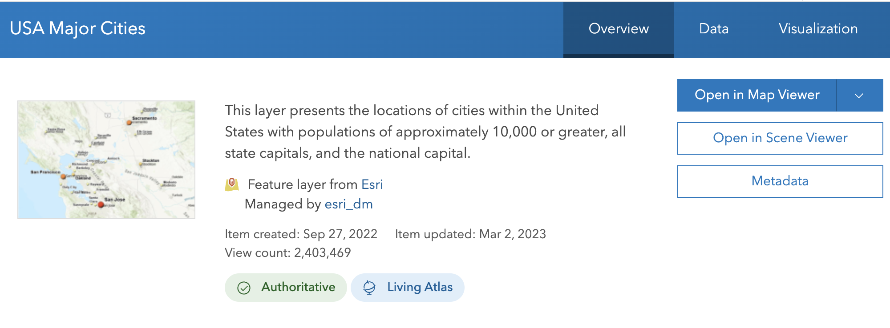
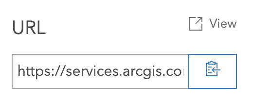
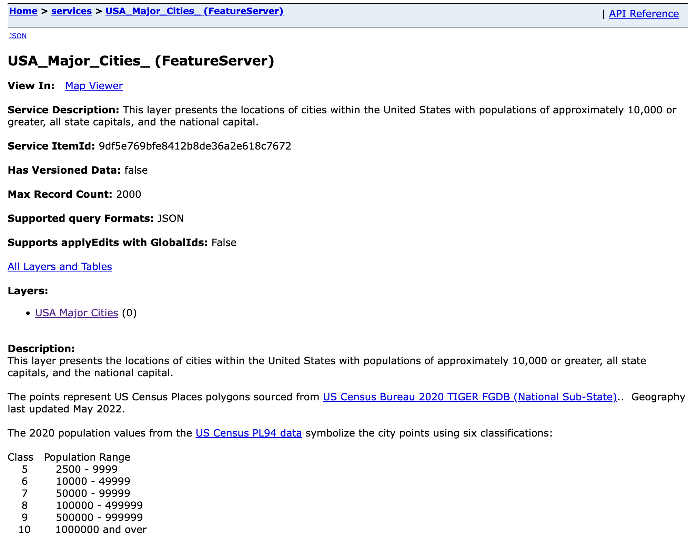
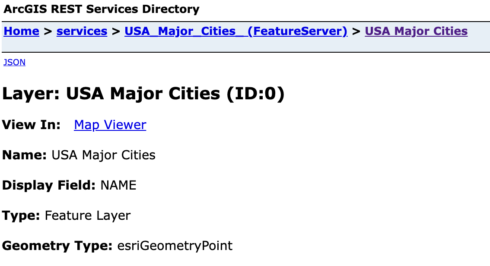

library(arcgis)Attaching core arcgis packages:
- {arcgisutils} v0.1.0
- {arcgislayers} v0.1.0Learn how to read data from ArcGIS Online or Enterprise into R
ArcGIS Online and Enterprise hosted Feature Layers can easily be read into R as {sf} objects using{arcgislayers}.
This tutorial will teach you the basics of reading data using arcgis.
The objective of this tutorial is to teach you how to
For this example we will read in population data of major US cities from ArcGIS Online.
We will use the functions arc_open() and arc_select() to read data from ArcGIS Online into R. However, these functions require the url of the hosted feature service. To find this, we can navigate to the item in our portal.
 When you scroll down, on the right hand side, you will see a button to view the service itself.

Clicking this will bring us to the Feature Service itself. Inside of a Feature Server there may be many layers or table that we can use. In this case, there is only one layer. Click the hyperlinked USA Major Cities.

Now we will be in the Feature Layer itself.

Navigate to your browsers search bar, and you can copy the url
https://services.arcgis.com/P3ePLMYs2RVChkJx/ArcGIS/rest/services/USA_Major_Cities_/FeatureServer/0Before we can read in the Feature Layer, we need to load the arcgis R package. If you do not have arcgis installed, install it with pak::pak("r-arcgis/arcgis").
{pak} is an R package that makes it faster and easier to install R packages. If you do not have it installed, run install.packages("pak") first.
library(arcgis)Attaching core arcgis packages:
- {arcgisutils} v0.1.0
- {arcgislayers} v0.1.0Let’s store the Feature Layer url in an object called furl (as in feature layer url).
furl <- "https://services.arcgis.com/P3ePLMYs2RVChkJx/ArcGIS/rest/services/USA_Major_Cities_/FeatureServer/0"We then pass this variable to arc_open() and save it to flayer (feature layer).
flayer <- arc_open(furl)
flayer<FeatureLayer>
Name: USA Major Cities
Geometry Type: esriGeometryPoint
CRS: 4326
Capabilities: Query,Extractarc_open() will create a FeatureLayer object. Under this hood this is really just a list with all of the feature layer’s metadata.
The FeatureLayer object is obtained by adding ?f=json to the feature layer url and processing the json. All of the metadata in there is stored in the FeatureLayer object. You can see this by running unclass(flayer). Be warned! It gets messy.
With this FeatureLayer object, we can read data from the service into R using it!
Once we have a FeatureLayer object we can read its data into memory using the arc_select() function. By default, if we use arc_select() on a FeatureLayer without any additional arguments, the entire service will be brought into memory.
Be careful to not try and read in more data than you need! Reading an entire feature services is fine for datasets in the realm of 0 - 5,000 features. But when we have more than 10,000 features performance and memory may be throttled.
Exceptionally detailed geometries require more data to be transferred across the web and may be slower to process.
cities <- arc_select(flayer)
citiesSimple feature collection with 4185 features and 11 fields
Geometry type: POINT
Dimension: XY
Bounding box: xmin: -159.3191 ymin: 19.58272 xmax: -68.67922 ymax: 64.86928
Geodetic CRS: WGS 84
First 10 features:
OBJECTID NAME CLASS STATE_ABBR STATE_FIPS PLACE_FIPS POPULATION
1 1 Alabaster city AL 01 0100820 33284
2 2 Albertville city AL 01 0100988 22386
3 3 Alexander City city AL 01 0101132 14843
4 4 Anniston city AL 01 0101852 21564
5 5 Athens city AL 01 0102956 25406
6 6 Atmore city AL 01 0103004 8391
7 7 Auburn city AL 01 0103076 76143
8 8 Bessemer city AL 01 0105980 26019
9 9 Birmingham city AL 01 0107000 200733
10 10 Calera city AL 01 0111416 16494
POP_CLASS POP_SQMI SQMI CAPITAL geometry
1 6 1300.7 25.59 POINT (-86.81782 33.2445)
2 6 827.9 27.04 POINT (-86.21205 34.26421)
3 6 337.4 43.99 POINT (-85.95631 32.94309)
4 6 469.9 45.89 POINT (-85.81986 33.6565)
5 6 625.8 40.60 POINT (-86.9508 34.78484)
6 5 382.5 21.94 POINT (-87.49009 31.02226)
7 7 1234.5 61.68 POINT (-85.48999 32.60691)
8 6 641.8 40.54 POINT (-86.9563 33.40092)
9 8 1342.2 149.55 POINT (-86.79647 33.5288)
10 6 674.0 24.47 POINT (-86.74549 33.1244)We store the results of arc_select() into the object cities. The result is an sf object that we can now work with using sf and any other R package we’d like.
In some cases we may have Feature Layers with many fields that we might not want. We can specify which fields we want to return to R by using the fields argument.
It’s always good to only read in the data that you need. Adding unneeded fields uses more memory and takes longer to process.
fields takes a character vector of field names. To see which fields are available in a Feature Layer you can use the utility function list_fields().
fields <- list_fields(flayer)
fields[, 1:4] name type alias sqlType
1 OBJECTID esriFieldTypeOID OBJECTID sqlTypeOther
2 NAME esriFieldTypeString Name sqlTypeOther
3 CLASS esriFieldTypeString Class sqlTypeOther
4 STATE_ABBR esriFieldTypeString State Abbreviation sqlTypeOther
5 STATE_FIPS esriFieldTypeString State FIPS sqlTypeOther
6 PLACE_FIPS esriFieldTypeString Place FIPS sqlTypeOther
7 POPULATION esriFieldTypeInteger 2020 Total Population sqlTypeOther
8 POP_CLASS esriFieldTypeSmallInteger Population Class sqlTypeOther
9 POP_SQMI esriFieldTypeDouble People per square mile sqlTypeOther
10 SQMI esriFieldTypeDouble Area in square miles sqlTypeOther
11 CAPITAL esriFieldTypeString Capital sqlTypeOtherFor the sake of readability, only the first 4 columns are displayed.
Let’s try reading in only the "STATE_ABBR", "POPULATION", and "NAME" fields.
arc_select(
flayer,
fields = c("STATE_ABBR", "POPULATION", "NAME")
)Simple feature collection with 4185 features and 3 fields
Geometry type: POINT
Dimension: XY
Bounding box: xmin: -159.3191 ymin: 19.58272 xmax: -68.67922 ymax: 64.86928
Geodetic CRS: WGS 84
First 10 features:
STATE_ABBR POPULATION NAME geometry
1 AL 33284 Alabaster POINT (-86.81782 33.2445)
2 AL 22386 Albertville POINT (-86.21205 34.26421)
3 AL 14843 Alexander City POINT (-85.95631 32.94309)
4 AL 21564 Anniston POINT (-85.81986 33.6565)
5 AL 25406 Athens POINT (-86.9508 34.78484)
6 AL 8391 Atmore POINT (-87.49009 31.02226)
7 AL 76143 Auburn POINT (-85.48999 32.60691)
8 AL 26019 Bessemer POINT (-86.9563 33.40092)
9 AL 200733 Birmingham POINT (-86.79647 33.5288)
10 AL 16494 Calera POINT (-86.74549 33.1244)Not only can we limit the number of columns that we return from a Feature Layer, but we can also limit the number of rows that we have returned to us. This is very handy in the case of very, very, massive Feature Layers with hundreds of thousands of features. Reading all of those features into memory would be slow, costly (in terms of memory), and unnecessary!
The where argument of arc_select() permits us to provide a very simple SQL where clause to limit what we get back. Let’s explore the use of the where argument.
Let’s modify our above arc_select() statement to return only the features in California. We do this by using the where clause STATE_ABBR = 'CA'
arc_select(
flayer,
where = "STATE_ABBR = 'CA'",
fields = c("STATE_ABBR", "POPULATION", "NAME")
)Simple feature collection with 498 features and 3 fields
Geometry type: POINT
Dimension: XY
Bounding box: xmin: -124.1662 ymin: 32.57388 xmax: -114.5903 ymax: 40.93734
Geodetic CRS: WGS 84
First 10 features:
STATE_ABBR POPULATION NAME geometry
1 CA 38046 Adelanto POINT (-117.4384 34.5792)
2 CA 20299 Agoura Hills POINT (-118.7601 34.15363)
3 CA 78280 Alameda POINT (-122.2614 37.7672)
4 CA 15314 Alamo POINT (-122.0307 37.84998)
5 CA 20271 Albany POINT (-122.3002 37.88985)
6 CA 82868 Alhambra POINT (-118.1355 34.08398)
7 CA 52176 Aliso Viejo POINT (-117.7289 33.57922)
8 CA 14696 Alpine POINT (-116.7585 32.84388)
9 CA 42846 Altadena POINT (-118.1356 34.19342)
10 CA 12042 Alum Rock POINT (-121.8239 37.3694)We can also consider finding only the places in the US with more than 1,000,000 people as well.
arc_select(
flayer,
where = "POPULATION > 1000000",
fields = c("STATE_ABBR", "POPULATION", "NAME")
)Simple feature collection with 10 features and 3 fields
Geometry type: POINT
Dimension: XY
Bounding box: xmin: -121.8864 ymin: 29.42354 xmax: -74.01013 ymax: 41.75649
Geodetic CRS: WGS 84
STATE_ABBR POPULATION NAME geometry
1 AZ 1608139 Phoenix POINT (-112.0739 33.44611)
2 CA 3898747 Los Angeles POINT (-118.2706 34.05279)
3 CA 1386932 San Diego POINT (-117.1456 32.72033)
4 CA 1013240 San Jose POINT (-121.8864 37.33941)
5 IL 2746388 Chicago POINT (-87.64715 41.75649)
6 NY 8804190 New York POINT (-74.01013 40.71057)
7 PA 1603797 Philadelphia POINT (-75.16099 39.95136)
8 TX 1304379 Dallas POINT (-96.79576 32.77865)
9 TX 2304580 Houston POINT (-95.36751 29.75876)
10 TX 1434625 San Antonio POINT (-98.4925 29.42354)Now let’s try combining both where clauses using and to find only the cities in California with a population greater than 1,000,000.
arc_select(
flayer,
where = "POPULATION > 1000000 and STATE_ABBR = 'CA'",
fields = c("STATE_ABBR", "POPULATION", "NAME")
)Simple feature collection with 3 features and 3 fields
Geometry type: POINT
Dimension: XY
Bounding box: xmin: -121.8864 ymin: 32.72033 xmax: -117.1456 ymax: 37.33941
Geodetic CRS: WGS 84
STATE_ABBR POPULATION NAME geometry
1 CA 3898747 Los Angeles POINT (-118.2706 34.05279)
2 CA 1386932 San Diego POINT (-117.1456 32.72033)
3 CA 1013240 San Jose POINT (-121.8864 37.33941)dplyrIf writing the field names out by hand and coming up with SQL where clauses isn’t your thing, that’s okay. We also provide dplyr::select() and dplyr::filter() methods for FeatureLayer objects.
The dplyr functionality is modeled off of dbplyr. The general concept is that we have a connection object that specifies what we will be querying against. Then we build up our queries using dplyr functions. Unlike using dplyr on data.frames, the results aren’t fetched eagerly. Instead they are lazy. With dbplyr we use the collect() function to execute a query and bring it into memory. The same is true with FeatureLayer objects.
Let’s build up a query and see it in action! We need to load dplyr to bring the functions into scope.
library(dplyr)
fl_query <- flayer |>
select(STATE_ABBR, POPULATION, NAME)
fl_query<FeatureLayer>
Name: USA Major Cities
Geometry Type: esriGeometryPoint
CRS: 4326
Capabilities: Query,Extract
Query:
outFields: STATE_ABBR,POPULATION,NAMEAfter doing this, we can see that our FeatureLayer object now prints out a Query field with the outFields parameter set to the result of our select() function.
We build up and store the query in the query attribute of a FeatureLayer object. It is a named list that will be passed directly to the API endpoint. The names match endpoint parameters.
attr(fl_query, "query")$outFields
[1] "STATE_ABBR,POPULATION,NAME"You can also manually specify parameters using the update_params() function. Note that there is no parameter validation.
update_params(fl_query, key = "value")<FeatureLayer>
Name: USA Major Cities
Geometry Type: esriGeometryPoint
CRS: 4326
Capabilities: Query,Extract
Query:
outFields: STATE_ABBR,POPULATION,NAME
key: valueWe can continue to build up our query using filter()
Only very basic filter statements are supported such as ==, <, >, etc.
fl_query |>
filter(POPULATION > 1000000, STATE_ABBR = "CA")<FeatureLayer>
Name: USA Major Cities
Geometry Type: esriGeometryPoint
CRS: 4326
Capabilities: Query,Extract
Query:
outFields: STATE_ABBR,POPULATION,NAME
where: POPULATION > 1000000.0 AND 'CA'The query is stored in the FeatureLayer object and will not be executed until we request it with collect().
fl_query |>
filter(POPULATION > 1000000, STATE_ABBR == "CA") |>
collect()Simple feature collection with 3 features and 3 fields
Geometry type: POINT
Dimension: XY
Bounding box: xmin: -121.8864 ymin: 32.72033 xmax: -117.1456 ymax: 37.33941
Geodetic CRS: WGS 84
STATE_ABBR POPULATION NAME geometry
1 CA 3898747 Los Angeles POINT (-118.2706 34.05279)
2 CA 1386932 San Diego POINT (-117.1456 32.72033)
3 CA 1013240 San Jose POINT (-121.8864 37.33941)